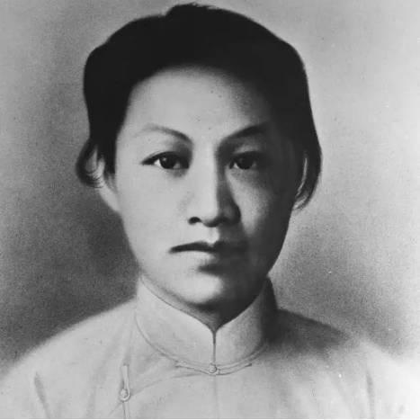

宁儿：
母亲对于你没有能尽到教育的责任，实在是遗憾的事情。
母亲因为坚决地做了反满抗日的斗争，今天已经到了牺牲的前夕了。
母亲和你在生前是永久没有再见的机会了。希望你，宁儿呵！赶快成人，来安慰你地下的母亲！
我最亲爱的孩子呵！母亲不用千言万语来教育你，就用实行来教育你。
在你长大成人之后，希望不要忘记你的母亲是为国而牺牲的！
一九三六年八月二日
你的母亲 赵一曼 于车中
红色家书，是革命者留下的私人记忆——它不是被陈列的历史文字，而是一封封跨越时空的心声。我们让青年不只"读"到家书，还能"对话"写信的人。

保留所选版本的文字、署名及附言。点击任一段，带着原文进入对话。
宁儿：
母亲对于你没有能尽到教育的责任，实在是遗憾的事情。
母亲因为坚决地做了反满抗日的斗争，今天已经到了牺牲的前夕了。
母亲和你在生前是永久没有再见的机会了。希望你，宁儿呵！赶快成人，来安慰你地下的母亲！
我最亲爱的孩子呵！母亲不用千言万语来教育你，就用实行来教育你。
在你长大成人之后，希望不要忘记你的母亲是为国而牺牲的！
一九三六年八月二日
你的母亲 赵一曼 于车中
红色节点标记本封家书；其后的事件为后人补充，不属于对话角色当时所知。
生平依据 ↗ · 家书日期依据 ↗1. 从母亲对教育责任的遗憾开始读。
2. “宁儿”和“孩子”是同一位收信人。
3. 将亲情与信中对自身选择的说明一起理解。
4. 图片另标身份，不将抄录件视为烈士亲笔。
人民周刊《我的孩子要代替母亲继续斗争》
保留项目原版第一封家书的正文。公开刊载有“呵/啊”“希望不要/希望你不要”等字词和标点差异，未在本次扩展中拼接异文。文献图像可能是后人抄录件，不统一标为烈士亲笔。
打开正文来源 ↗当代体验者创作，不是收信人的真实家书。下载前请自行保存文字，刷新后不保留。
保留所选版本的文字、署名及附言。点击任一段，带着原文进入对话。
志兰：
就江明同志回延之便再带给你十几个字。
乔迁同志那批过路的人，在几天前已安全通过敌之封锁线了，很快可以到达延安，想不久你可看到我的信。
希特勒“春季攻势”作战已爆发，这将影响日寇行动及我国国内局势，国内局势将如何变迁不久或可明朗化了。
我担心着你及北北，你入学后望能好好地恢复身体，有暇时多去看看太北，小孩子极需人照顾的。
此间一切如常，惟生活则较前艰难多了，部队如不生产则简直不能维持。我也种了四五十棵洋姜，还有二十棵西红柿，长得还不坏。今年没有种花，也很少打球。每日除照常工作外，休息时玩玩扑克与斗牛。志林很爱玩牌，晚饭后经常找我去打扑克，他的身体很好，工作也不坏。
想来太北长得更高了，懂得很多事了，她在保育院情形如何？你是否能经常去看她？来信时希多报道太北的一切。在闲游与独坐中，有时总仿佛有你及北北与我在一块玩着、谈着，特别是北北非常调皮，一时在地下、一时爬在妈妈怀里，又由妈妈怀里转到爸爸怀里来闹个不休，真是快乐。可惜三个人分在三处，假如在一块的话，真痛快极了。
重复说我虽如此爱太北，但是时局有变，你可大胆按情处理太北的问题，不必顾及我。一切以不再多给你受累，不再多妨碍你的学习及妨碍必要时之行动为原则。
志兰！亲爱的：别时容易见时难，分离二十一个月了，何日相聚？
念、念、念、念！愿在党的整顿之风下各自努力，力求进步吧！以进步来安慰自己，以进步来酬报别后衷情。
不多谈了，祝你好！
叔仁
五月二十二日晚
有便多写信给我。
敌人又自本区开始扫荡，明日准备搬家了。拟托孙仪之同志带之信未交出，一同付你。
红色节点标记本封家书；其后的事件为后人补充，不属于对话角色当时所知。
生平依据 ↗ · 家书日期依据 ↗1. 辨认志兰、北北与志林。
2. 种菜的日常与战事出现在同一封信里。
3. 团聚段落是想象，不是已发生的相聚。
4. 保留署名后的“扫荡”与转移消息。
当代体验者创作，不是收信人的真实家书。下载前请自行保存文字，刷新后不保留。
保留所选版本的文字、署名及附言。点击任一段，带着原文进入对话。
竹安①弟：
友人告知你的近况，我感到非常难受。幺姐②及两个孩子给你的负担的确是太重了，尤其是现在的物价情况下，以你仅有的收入，不知把你拖成个甚么样子。除了伤心而外，就只有恨了。我想你决〔绝〕不会抱怨孩子的爸爸③和我吧？苦难的日子快完了，除了这希望的日子快点到来而外，我甚么都不能兑现。安弟，的确太辛苦你了。
我有必胜和必活的信心，自入狱日起（去年六月被捕）我就下了两年坐牢的决心。现在时局变化的情况，年底有出牢的可能。蒋王八的来渝，固然不是一件好事。但是不管他若〔如〕何顽固，现在战事已近川边，这是事实，重庆再强也不能和平、京、穗相比，因此大方的给它三四月的命运就会完蛋的。我们在牢里也不白坐，我们一直是不断地在学习，希望我俩见面时你更有惊人的进步。这点我们当然及不上外面的朋友。
话又得说回来，我们到底还是虎口里的人，生死未定。万一他作破坏到底的孤注一掷，一个炸弹两三百人的看守所就完了。这<种>可能我们估计的确很少，但是并不等于没有。假若不幸的话，云儿就送你了，盼教以踏着父母之足迹，以建设新中国为志，为共产主义革命事业奋斗到底。
孩子们决〔绝〕不要娇养，粗服淡饭足矣。幺姐是否仍在重庆？若在，云儿可以不必送托儿所，可节省一笔费用，你以为如何？就这样吧，愿我们早日见面。握别。愿你们都健康！
竹 姐
八月廿七日
来友是我很好的朋友，不用怕，盼能坦白相谈。
红色节点标记本封家书；其后的事件为后人补充，不属于对话角色当时所知。
生平依据 ↗ · 家书日期依据 ↗1. 先读对亲友照料孩子的感谢，再看托付的内容。
2. 将“必胜和必活的信心”与“假若不幸”的安排放在一起理解。
3. 信中有当时对形势的判断，不将其写成已经发生的结果。
4. 保留署名、日期与信末附言。
吉林省纪委监委网站《为共产主义革命事业奋斗到底》
采用该页1949年8月27日版本，保留①②③、〔〕及<种>等刊载注记，不将其视为另加的原文。另一共产党员网节选页标注8月26日，并将谭竹安解释为彭咏梧前妻的弟弟；本页不把存在差异的亲属称谓写成定论。家书主文、附言按所选版本保留。
打开正文来源 ↗ · 对照版本 / 差异资料 ↗当代体验者创作，不是收信人的真实家书。下载前请自行保存文字，刷新后不保留。
保留所选版本的文字、署名及附言。点击任一段，带着原文进入对话。
云霄我的爱妻：
这是我给你的最后的信了，我即日便要处死了，你已有身(孕)，不可因我死而过于悲伤。他日无论生男或生女，我的父母会来抚养他的。我的作品以及我的衣物，你可以选择一些给他留作纪念。
你也迟早不免于死，我已请求父亲把我俩合葬。以前我们都不相信有鬼，现在则唯愿有鬼。“在天愿为比翼鸟，在地愿为并蒂莲，夫妻恩爱永，世世缔良缘。”回忆我俩在苏联求学时，互相切磋，互相勉励，课余时间闲谈琐事，共话桑麻，假期中或滑冰或避暑，或旅行或游历，形影相随。及去年返国后，你路过家门而不入，与我一路南下，共同工作。你在事业上、学业上所给我的帮助，是比任何教师任何同志都要大的，尤其是前年我病本已病入膏肓，自度必为异国之鬼，而幸得你的殷勤看护，日夜不离，始得转危为安。那时若死，可说是轻于鸿毛，如今之死，则重于泰山了。
前日父亲来看我时还在设法营救我们，其诚是可感的，但我们宁愿玉碎却不愿瓦全。父母为我费了多少苦心才使我们成人，尤其是我那慈爱的母亲，我当年是瞒了他(她)出国的。我的妹妹时常写信告诉我，母亲天天为了惦念她的在异国的爱儿而流泪，我现在也懊悔此次在家乡工作时竟不去见他(她)老人家一面，到如今已是死生永别了。前日父亲来时我还活着，而他日来时只能看到他的爱儿的尸体了。我想起了我死后父母的悲伤，我也不觉流泪了。云!谁无父母，谁无儿女，谁无情人!我们正是为了救助全中国人民的父母和妻儿，所以牺牲了自己的一切。我们虽然是死了，但我们的遗志自有未死的同志来完成。大丈夫不成功便成仁，死又何憾!
此祝健康
并问王同志好
觉 手书
一九二八年十月十日
红色节点标记本封家书；其后的事件为后人补充，不属于对话角色当时所知。
生平依据 ↗ · 家书日期依据 ↗1. 先辨认信中妻子、父母与未出生的孩子。
2. 回忆中的相互照料，让“同志”和“爱妻”两个身份连在一起。
3. “我也不觉流泪了”与他所坚守的选择应一起阅读。
4. 信中提及后来才出生的孩子，阅读与对话不提前替孩子命名。
三湘风纪网《中国纪检监察报：一对革命伉俪的血泪遗书》
正文采用该页所载版本，保留括号校注及落款。写信日期为10月10日，牺牲日期为10月14日；不把两者混为同一天。信中对妻子未来的判断属于写信时的文字，不在角色对话中补入后来事件。
打开正文来源 ↗当代体验者创作，不是收信人的真实家书。下载前请自行保存文字，刷新后不保留。
保留所选版本的文字、署名及附言。点击任一段，带着原文进入对话。
亲爱的夫人钧:
同志们曾说，世上唯有家钧好，今日里才觉你是巾帼贤。我一生无愁无泪无私念，你切莫悲悲凄凄泪涟涟。张眼望，这人世，几家夫妻偕老有百年。抛头颅、洒热血，明翰早已视等闲。“各取所需”终有日，革命事业代代传。红珠留着相思念，赤云孤苦望成全，坚持革命继吾志，誓将真理传人寰!
红色节点标记本封家书；其后的事件为后人补充，不属于对话角色当时所知。
生平依据 ↗ · 家书日期依据 ↗1. 本页只选致妻子的一封，不把“三封家书”合成一封。
2. 家书采用韵文表达，不能因为形式像诗就与就义诗混淆。
3. “红珠”是信物，“赤云”是女儿。
4. 具体日未署，不把牺牲日自动当成写信日。
湖北省司法厅《诵读红色家书》所载致妻子信
采用该页“夏明翰致妻子郑家钧（1928年3月）”版本，未添加原文没有的落款和具体日期。不同刊载版本有“留着/留作”“凄凄/戚戚”等异文，本页不混合拼接。就义诗属于另一作品，未作为本页家书。
打开正文来源 ↗ · 对照版本 / 差异资料 ↗当代体验者创作，不是收信人的真实家书。下载前请自行保存文字，刷新后不保留。
保留所选版本的文字、署名及附言。点击任一段，带着原文进入对话。
亲爱的弟弟妹妹：
我今与你们永诀了。
我的死是为着社会、国家和人类，是光荣的，是必要的。我死后有我千万同志，他们能踏着我的血迹奋斗前进，我们的革命事业必底于成，故我虽死犹存。我底［的］肉体被反动派毁去了，我的自由的革命的灵魂是永远不会被任何反动者所毁伤！我的不昧的灵魂必时常随着你们，照护你们和我的未死的同志，请你们不要因丧兄而悲吧！
妹妹，你年长些，从此以后，你是家长了，身兼父母兄长的重大责任。我本不应当把这重大的担子放在你身上，抛弃你们，但为着了大我不能不对你们忍心些，我相信你们在痛哭之余，必能谅察我的苦衷而愿［原］谅我。
弟弟，你年小些，你待姊应如待父母兄长一样，遇事要和她商量，听她指导。家里十余亩田作为你俩生活及教育费。因我死以后，不要治丧，因为这是浪费的。以后你能继我志愿，乃我门第之光，我必含笑九泉，看你成功；不能继我志愿，则万不能与国民党的腐败份［分］子同流。
现在我的心很镇静，但不愿多谈多写，虽有千言万语要嘱咐你们，但始终无法写出。
好！弟妹！今生就这样与你们作结了。
你们的大哥砚芬嘱
红色节点标记本封家书；其后的事件为后人补充，不属于对话角色当时所知。
生平依据 ↗ · 家书日期依据 ↗1. 注意“妹妹”是相较弟弟年长，不是相较写信人年长。
2. 信中土地安排对应的是弟妹的生活与教育。
3. 区分写信时间与牺牲时间，原信没有具体落款日期。
4. 原文的旧字与校注保留显示，不自行改写原信。
共产党员网《史砚芬致弟弟妹妹》
正文采用该页版本，保留［的］［原］［分］等校注；原信未署具体日期，故不将牺牲日期当作写信日期。生平采用雨花台烈士陵园所载1904年；新华社2018年报道另载1903年，差异在此保留说明。
打开正文来源 ↗ · 对照版本 / 差异资料 ↗当代体验者创作，不是收信人的真实家书。下载前请自行保存文字，刷新后不保留。